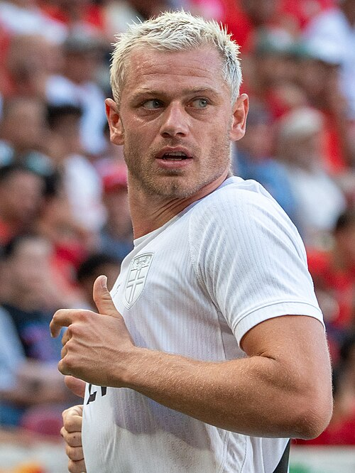

Ezzcoins › Player pages › Julian Ryerson

Photo source
https://commons.wikimedia.org/wiki/File:Julian_Ryerson_Morocco_v_Norway_7_June_2026-200_(cropped).jpg
Licence: https://creativecommons.org/licenses/by-sa/4.0
Julian Ryerson
82 RB · Borussia Dortmund · Bundesliga ·  Norway
Norway
No console price yet. Add this player to your watchlist on Ezzcoins: the most-watched players get a price every hour.
PAC75
SHO63
PAS76
DRI77
DEF78
PHY82
- Position
- RB (also LB, RM, LM)
- Club
- Borussia Dortmund
- League
- Bundesliga
- Nation
- Norway
- Skill moves
- 2★
- Weak foot
- 3★
- Preferred foot
- Right
- PlayStyles+
- Whipped Pass+
More from Borussia Dortmund
- 87
 Gregor KobelGK
Gregor KobelGK - 87
 Nico SchlotterbeckCB
Nico SchlotterbeckCB - 85Felix NmechaCM
- 85
 Serhou GuirassyST
Serhou GuirassyST - 84Waldemar AntonCB
- 82
 Joey VeermanCM
Joey VeermanCM - 81Emre CanCB
- 81
 Marcel SabitzerCM
Marcel SabitzerCM